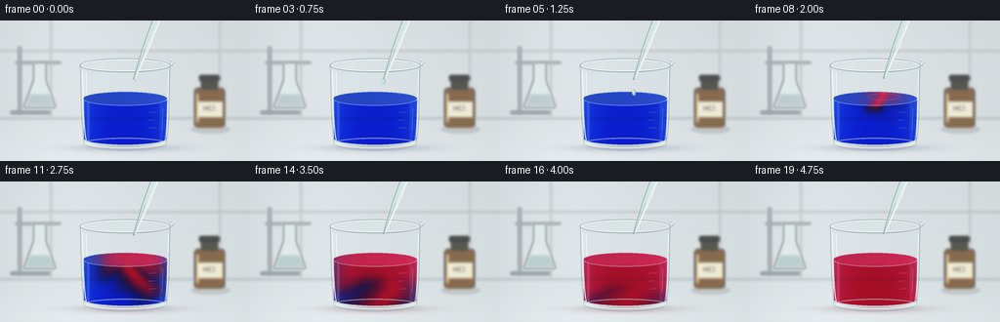
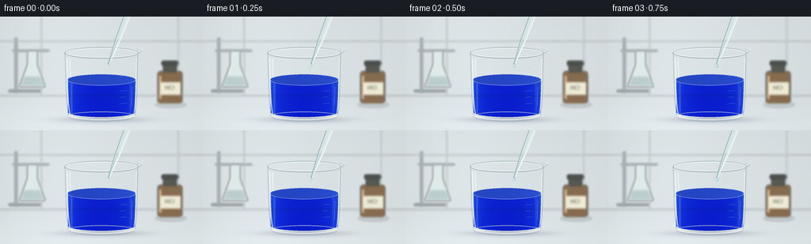

CODING AGENTS AS PIXEL WORLD MODELS
traex/GPT-6.1-Sol · material_0037
点击播放 · 原生 RGB 像素
逐轮保存的候选
回放视频、检查图与代码变化。
每份候选均可单独播放。实际图片检查记录在下方工具轨迹中。
候选 01播放与检查图
点击播放 · 原生 RGB 像素


展开代码变化
--- 上一保存版本
+++ 本次保存版本
@@ -0,0 +1,180 @@
+from pathlib import Path
+import json
+import numpy as np
+from PIL import Image, ImageDraw, ImageFilter, ImageFont
+from artifact_io import save
+
+ROOT=Path(__file__).resolve().parent
+SPEC=json.loads((ROOT/'task_spec.json').read_text())
+W,H=SPEC['width'],SPEC['height']
+S=4
+WW,HH=W*S,H*S
+Y,X=np.mgrid[0:HH,0:WW].astype(np.float32)
+X/=S; Y/=S
+rng=np.random.default_rng(13)
+
+def layer(): return Image.new('RGBA',(WW,HH))
+def ellipse(d,box,fill,outline=None,width=1):
+ d.ellipse(tuple(round(v*S) for v in box),fill,outline,width=max(1,round(width*S)))
+def line(d,pts,fill,width=1):
+ d.line([(round(x*S),round(y*S)) for x,y in pts],fill,width=max(1,round(width*S)),joint='curve')
+def poly(d,pts,fill): d.polygon([(round(x*S),round(y*S)) for x,y in pts],fill)
+def bez(a,b,c,d,n=50):
+ t=np.linspace(0,1,n)[:,None]
+ return ((1-t)**3*np.array(a)+3*(1-t)**2*t*np.array(b)+3*(1-t)*t*t*np.array(c)+t**3*np.array(d)).tolist()
+def composite(arr,lay):
+ z=np.asarray(lay).astype(np.float32)/255
+ return arr*(1-z[:,:,3:4])+z[:,:,:3]*255*z[:,:,3:4]
+
+# Soft, naturally lit laboratory, rendered directly from geometry.
+base=np.empty((HH,WW,3),np.float32)
+vignette=((X-130)/205)**2+((Y-68)/140)**2
+for c,k in enumerate([.97,1.0,1.01]):
+ base[:,:,c]=(224-11*vignette+6*np.exp(-((X-67)/70)**2))*k
+base += (np.clip((Y-100)/38,0,1)*9)[:,:,None]
+bg=layer(); d=ImageDraw.Draw(bg)
+line(d,[(0,100),(256,100)],(152,163,166,85),1)
+line(d,[(0,31),(256,31)],(172,185,188,80),1)
+line(d,[(52,0),(52,100)],(167,181,183,75),1)
+line(d,[(225,0),(225,100)],(170,183,185,65),1)
+# A distant laboratory rack and vessel at left.
+line(d,[(20,27),(20,96)],(125,145,151,135),3)
+line(d,[(11,94),(51,94)],(111,131,139,150),3)
+line(d,[(16,43),(62,43)],(119,143,149,135),2)
+poly(d,[(35,44),(47,44),(47,61),(57,89),(24,89),(35,61)],(224,238,235,175))
+poly(d,[(31,76),(50,76),(55,87),(26,87)],(159,187,186,135))
+line(d,[(35,46),(35,61),(26,86)],(255,255,250,195),1.3)
+# Amber hydrochloric-acid reagent bottle, behind the experiment.
+ellipse(d,(196,108,235,115),(126,137,133,65))
+d.rounded_rectangle((199*S,69*S,230*S,110*S),radius=4*S,fill=(120,86,52,215))
+d.rectangle((206*S,58*S,223*S,71*S),fill=(87,88,81,255))
+d.rounded_rectangle((204*S,56*S,225*S,62*S),radius=2*S,fill=(75,80,76,255))
+line(d,[(202,75),(202,104)],(230,189,129,160),2)
+d.rectangle((202*S,83*S,228*S,99*S),fill=(239,236,214,240))
+try: font=ImageFont.truetype('/usr/share/fonts/truetype/dejavu/DejaVuSans.ttf',7*S)
+except OSError: font=ImageFont.load_default()
+d.text((208*S,86*S),'HCl',font=font,fill=(67,70,64,255))
+bg=bg.filter(ImageFilter.GaussianBlur(1.3*S))
+base=composite(base,bg)
+
+# Contact shadow and a reflected patch below the glass.
+shadow=np.exp(-((X-129)/49)**2-((Y-130)/3.3)**2)
+base *= (1-.18*shadow)[:,:,None]
+backglass=layer(); d=ImageDraw.Draw(backglass)
+body=bez((82,46),(83,72),(83,115),(86,125))+bez((86,125),(99,136),(157,136),(170,125))+bez((170,125),(173,108),(173,74),(174,46))+bez((174,46),(153,54),(102,54),(82,46))
+poly(d,body,(198,220,224,27))
+line(d,bez((82,46),(83,70),(83,109),(86,125)),(114,140,147,125),.7)
+line(d,bez((174,46),(173,80),(173,116),(170,125)),(102,129,140,120),.8)
+ellipse(d,(86,119,170,133),(209,226,229,24),(128,158,164,115),.7)
+base=composite(base,backglass)
+
+# Liquid silhouette: curved back meniscus, cylinder sides, and rounded floor.
+liq_mask=Image.new('L',(WW,HH)); md=ImageDraw.Draw(liq_mask)
+arc=[(128+43*np.cos(t),80+7*np.sin(t)) for t in np.linspace(np.pi,2*np.pi,90)]
+pts=arc+[(170,121)]+[(128+42*np.cos(t),121+6*np.sin(t)) for t in np.linspace(0,np.pi,90)]+[(85,80)]
+poly(md,pts,255)
+mask=np.asarray(liq_mask).astype(np.float32)/255
+u=(X-128)/43
+thickness=np.sqrt(np.maximum(0,1-u*u))
+# Fixed fine sensor texture, avoiding temporal flicker.
+texture=rng.normal(0,.30,(HH,WW,1)).astype(np.float32)
+
+def reaction(i):
+ # The first acidic drop lands at frame 6. A falling red plume folds,
+ # spreads through the blue fluid, and finally equilibrates in timelapse.
+ elapsed=max(0,(i-6)/4)
+ if i<6: return np.zeros_like(X)
+ yy=np.maximum(Y-76,0)
+ center=137-11*np.sin(yy*.09+elapsed*1.1)*(1-np.exp(-yy/10))
+ plume_width=2.4+elapsed*13+yy*.07
+ depthfront=78+elapsed*31
+ waviness=3*np.sin(X*.11+Y*.14-elapsed*3)
+ plume=np.exp(-((X-center)/plume_width)**2)*1/(1+np.exp(np.clip((Y-depthfront+waviness)/3,-30,30)))
+ topfront=1/(1+np.exp(np.clip((Y-77-elapsed*16+4*np.sin(X*.10+elapsed))/4,-30,30)))
+ leftfront=1/(1+np.exp(np.clip((np.abs(X-137)-(elapsed*26+1))/5,-30,30)))
+ spread=np.maximum(plume,topfront*leftfront)
+ equilibrium=np.clip((elapsed-1.45)/1.55,0,1)
+ return np.clip(spread*(1-equilibrium)+equilibrium,0,1)
+
+def render(i):
+ r=reaction(i)
+ arr=base.copy()
+ # Very restrained tinted transmitted-light reflection on the bench.
+ reflection=np.exp(-((X-129)/40)**2-((Y-132)/3.8)**2)*.10
+ tint=np.array([40,61,190])*(1-r[100*S,128*S])+np.array([191,31,71])*r[100*S,128*S]
+ arr=arr*(1-reflection[:,:,None])+tint*reflection[:,:,None]
+ # Refracted background behind the curved glass.
+ dx=(u*3.5*thickness*S).astype(int)
+ idx=np.clip(np.arange(WW)[None,:]+dx,0,WW-1)
+ refracted=base[np.arange(HH)[:,None],idx]
+ blue=np.array([2.35,1.32,.10],np.float32)
+ red=np.array([.18,2.03,1.21],np.float32)
+ absorb=blue[None,None,:]*(1-r[:,:,None])+red[None,None,:]*r[:,:,None]
+ depth=(.65+thickness*1.10)*(1+.10*np.clip((Y-81)/45,0,1))
+ transmission=np.exp(-absorb*depth[:,:,None])
+ liquid=refracted*transmission+np.array([8,10,15])[None,None,:]
+ # Cylindrical reflections and light streaks are continuous across hues.
+ glint=(np.exp(-((X-90.3)/1.1)**2)*.20+np.exp(-((X-164.8)/1.4)**2)*.10)*np.clip((Y-78)/8,0,1)
+ liquid=liquid*(1-glint[:,:,None])+np.array([221,238,244])*glint[:,:,None]
+ arr=arr*(1-mask[:,:,None])+liquid*mask[:,:,None]
+ # The visible elliptical free surface is paler than the thick liquid body.
+ surface=((X-128)/43)**2+((Y-80)/7)**2
+ smask=np.clip((1-surface)*14,0,1)*mask
+ rt=r
+ sc=np.array([49,88,207])[None,None,:]*(1-rt[:,:,None])+np.array([218,47,96])[None,None,:]*rt[:,:,None]
+ sc=sc*(.89+.10*(X-85)/86)[:,:,None]
+ arr=arr*(1-smask[:,:,None]*.76)+sc*smask[:,:,None]*.76
+ details=layer(); d=ImageDraw.Draw(details)
+ # Back and front meniscus, small disturbance fading after the drop.
+ line(d,[(128+43*np.cos(t),80+7*np.sin(t)) for t in np.linspace(np.pi,2*np.pi,100)],(164,193,231,115),.55)
+ line(d,[(128+43*np.cos(t),80+7*np.sin(t)) for t in np.linspace(0,np.pi,100)],(225,231,243,130),.65)
+ if 6<=i<=9:
+ p=(i-6)/3
+ rad=3+p*19
+ ellipse(d,(137-rad,78-rad*.22,137+rad,78+rad*.22),None,(237,231,255,int(125*(1-p))),.55)
+ # Clear heavy base, specular edge lights and subtle measuring marks.
+ ellipse(d,(86,120,170,131),None,(216,232,235,125),1.3)
+ line(d,bez((86,125),(103,132),(153,132),(170,125)),(253,255,254,195),1.1)
+ line(d,bez((84.2,52),(85.5,76),(84.5,103),(88.1,123)),(249,254,255,196),1.35)
+ line(d,bez((88,53),(88,63),(88.6,74),(88.8,77)),(255,255,255,171),1.0)
+ line(d,bez((172.1,52),(171.2,79),(172,104),(168.8,122)),(238,249,253,167),1.05)
+ line(d,[(166.7,89),(166.1,113)],(248,250,251,80),.6)
+ for j,y in enumerate([61,68,75,94,102,110]):
+ line(d,[(152,y),(158+(j%2)*2,y-.4)],(245,249,248,115),.55)
+ # Beaker rolled rim with a small pouring spout to the right.
+ ellipse(d,(81.4,38.8,174.5,53),None,(108,139,148,155),.9)
+ ellipse(d,(82.5,39.5,173.5,52),None,(247,255,255,195),1)
+ line(d,[(172,40.5),(179,42),(176,46),(173.4,47)],(171,193,198,215),.9)
+ line(d,[(172.3,39.8),(179.4,41.8),(176,43)],(252,255,255,223),.75)
+ # A slender glass Pasteur pipette enters from above, held outside the crop.
+ # It lifts slightly after releasing precisely one drop.
+ lift=max(0,min((i-7)/5,1))*7
+ tip=np.array([137.,60.-lift]); top=np.array([165.,-14.-lift])
+ vec=(tip-top); vec=vec/np.linalg.norm(vec); perp=np.array([-vec[1],vec[0]])
+ shoulder=top+(tip-top)*.58
+ pippts=[top+perp*3.8,shoulder+perp*3,tip+perp*.65,tip-perp*.65,shoulder-perp*3,top-perp*3.8]
+ poly(d,pippts,(209,229,228,155))
+ line(d,[top+perp*3.8,shoulder+perp*3,tip+perp*.65],(120,154,162,213),.65)
+ line(d,[top-perp*3.8,shoulder-perp*3,tip-perp*.65],(248,255,255,245),1.0)
+ line(d,[top-perp*1.7,shoulder-perp*1.3,tip],(255,255,251,153),.65)
+ # A colorless acid column in the tip, and wet highlight at the aperture.
+ line(d,[shoulder,tip],(151,191,197,145),1)
+ ellipse(d,(tip[0]-1.2,tip[1]-.6,tip[0]+1.0,tip[1]+.8),(114,156,164,175))
+ if i<=5:
+ if i<=3:
+ size=1.2+i*.43; cy=60+size*.7
+ droplet=bez((137,59.7),(137-size*.7,60.8),(137-size,cy),(137-size*.8,cy+1))+bez((137-size*.8,cy+1),(136,cy+size*1.6),(139,cy+size*1.6),(137+size*.8,cy+1))+bez((137+size*.8,cy+1),(137+size,cy),(137.5,60.4),(137,59.7))
+ poly(d,droplet,(178,211,221,223))
+ line(d,bez((136.6,61),(135.8,62),(136,cy+1),(136.4,cy+1.2)),(255,255,255,236),.65)
+ else:
+ cy=67 if i==4 else 74
+ ellipse(d,(134.9,cy-3,139.1,cy+3),(185,215,225,230),(112,159,178,200),.5)
+ ellipse(d,(135.6,cy-1.9,136.7,cy+.4),(255,255,255,239))
+ arr=composite(arr,details)
+ arr=np.clip(arr+texture,0,255).astype(np.uint8)
+ return np.asarray(Image.fromarray(arr).resize((W,H),Image.Resampling.LANCZOS).convert('RGB'))
+
+if __name__=='__main__':
+ frames=np.stack([render(i) for i in range(SPEC['frames'])])
+ save(frames,ROOT)
+ print(f'Saved {len(frames)} RGB frames, {W}x{H}, {SPEC["fps"]} fps.')
可观测工具轨迹
实际执行的命令与返回图片。
命令 1exit 0
/bin/bash -lc 'ls -la && cat prompt.txt && cat GENERATION_RULES.md && cat task_spec.json'
命令 2exit 0
/bin/bash -lc "cat artifact_io.py && python - <<'PY'
import numpy, PIL
print('numpy/PIL available')
PY"命令 3exit 0
/bin/bash -lc "cat > generate.py <<'PY'
from pathlib import Path
import json
import numpy as np
from PIL import Image, ImageDraw, ImageFilter, ImageFont
from artifact_io import save
ROOT=Path(__file__).resolve().parent
SPEC=json.loads((ROOT/'task_spec.json').read_text())
W,H=SPEC['width'],SPEC['height']
S=4
WW,HH=W*S,H*S
Y,X=np.mgrid[0:HH,0:WW].astype(np.float32)
X/=S; Y/=S
rng=np.random.default_rng(13)
def layer(): return Image.new('RGBA',(WW,HH))
def ellipse(d,box,fill,outline=None,width=1):
d.ellipse(tuple(round(v*S) for v in box),fill,outline,width=max(1,round(width*S)))
def line(d,pts,fill,width=1):
d.line([(round(x*S),round(y*S)) for x,y in pts],fill,width=max(1,round(width*S)),joint='curve')
def poly(d,pts,fill): d.polygon([(round(x*S),round(y*S)) for x,y in pts],fill)
def bez(a,b,c,d,n=50):
t=np.linspace(0,1,n)[:,None]
return ((1-t)**3*np.array(a)+3*(1-t)**2*t*np.array(b)+3*(1-t)*t*t*np.array(c)+t**3*np.array(d)).tolist()
def composite(arr,lay):
z=np.asarray(lay).astype(np.float32)/255
return arr*(1-z[:,:,3:4])+z[:,:,:3]*255*z[:,:,3:4]
# Soft, naturally lit laboratory, rendered directly from geometry.
base=np.empty((HH,WW,3),np.float32)
vignette=((X-130)/205)**2+((Y-68)/140)**2
for c,k in enumerate([.97,1.0,1.01]):
base[:,:,c]=(224-11*vignette+6*np.exp(-((X-67)/70)**2))*k
base += (np.clip((Y-100)/38,0,1)*9)[:,:,None]
bg=layer(); d=ImageDraw.Draw(bg)
line(d,[(0,100),(256,100)],(152,163,166,85),1)
line(d,[(0,31),(256,31)],(172,185,188,80),1)
line(d,[(52,0),(52,100)],(167,181,183,75),1)
line(d,[(225,0),(225,100)],(170,183,185,65),1)
# A distant laboratory rack and vessel at left.
line(d,[(20,27),(20,96)],(125,145,151,135),3)
line(d,[(11,94),(51,94)],(111,131,139,150),3)
line(d,[(16,43),(62,43)],(119,143,149,135),2)
poly(d,[(35,44),(47,44),(47,61),(57,89),(24,89),(35,61)],(224,238,235,175))
poly(d,[(31,76),(50,76),(55,87),(26,87)],(159,187,186,135))
line(d,[(35,46),(35,61),(26,86)],(255,255,250,195),1.3)
# Amber hydrochloric-acid reagent bottle, behind the experiment.
ellipse(d,(196,108,235,115),(126,137,133,65))
d.rounded_rectangle((199*S,69*S,230*S,110*S),radius=4*S,fill=(120,86,52,215))
d.rectangle((206*S,58*S,223*S,71*S),fill=(87,88,81,255))
d.rounded_rectangle((204*S,56*S,225*S,62*S),radius=2*S,fill=(75,80,76,255))
line(d,[(202,75),(202,104)],(230,189,129,160),2)
d.rectangle((202*S,83*S,228*S,99*S),fill=(239,236,214,240))
try: font=ImageFont.truetype('/usr/share/fonts/truetype/dejavu/DejaVuSans.ttf',7*S)
except OSError: font=ImageFont.load_default()
d.text((208*S,86*S),'HCl',font=font,fill=(67,70,64,255))
bg=bg.filter(ImageFilter.GaussianBlur(1.3*S))
base=composite(base,bg)
# Contact shadow and a reflected patch below the glass.
shadow=np.exp(-((X-129)/49)**2-((Y-130)/3.3)**2)
base *= (1-.18*shadow)[:,:,None]
backglass=layer(); d=ImageDraw.Draw(backglass)
body=bez((82,46),(83,72),(83,115),(86,125))+bez((86,125),(99,136),(157,136),(170,125))+bez((170,125),(173,108),(173,74),(174,46))+bez((174,46),(153,54),(102,54),(82,46))
poly(d,body,(198,220,224,27))
line(d,bez((82,46),(83,70),(83,109),(86,125)),(114,140,147,125),.7)
line(d,bez((174,46),(173,80),(173,116),(170,125)),(102,129,140,120),.8)
ellipse(d,(86,119,170,133),(209,226,229,24),(128,158,164,115),.7)
base=composite(base,backglass)
# Liquid silhouette: curved back meniscus, cylinder sides, and rounded floor.
liq_mask=Image.new('L',(WW,HH)); md=ImageDraw.Draw(liq_mask)
arc=[(128+43*np.cos(t),80+7*np.sin(t)) for t in np.linspace(np.pi,2*np.pi,90)]
pts=arc+[(170,121)]+[(128+42*np.cos(t),121+6*np.sin(t)) for t in np.linspace(0,np.pi,90)]+[(85,80)]
poly(md,pts,255)
mask=np.asarray(liq_mask).astype(np.float32)/255
u=(X-128)/43
thickness=np.sqrt(np.maximum(0,1-u*u))
# Fixed fine sensor texture, avoiding temporal flicker.
texture=rng.normal(0,.30,(HH,WW,1)).astype(np.float32)
def reaction(i):
# The first acidic drop lands at frame 6. A falling red plume folds,
# spreads through the blue fluid, and finally equilibrates in timelapse.
elapsed=max(0,(i-6)/4)
if i<6: return np.zeros_like(X)
yy=np.maximum(Y-76,0)
center=137-11*np.sin(yy*.09+elapsed*1.1)*(1-np.exp(-yy/10))
plume_width=2.4+elapsed*13+yy*.07
depthfront=78+elapsed*31
waviness=3*np.sin(X*.11+Y*.14-elapsed*3)
plume=np.exp(-((X-center)/plume_width)**2)*1/(1+np.exp(np.clip((Y-depthfront+waviness)/3,-30,30)))
topfront=1/(1+np.exp(np.clip((Y-77-elapsed*16+4*np.sin(X*.10+elapsed))/4,-30,30)))
leftfront=1/(1+np.exp(np.clip((np.abs(X-137)-(elapsed*26+1))/5,-30,30)))
spread=np.maximum(plume,topfront*leftfront)
equilibrium=np.clip((elapsed-1.45)/1.55,0,1)
return np.clip(spread*(1-equilibrium)+equilibrium,0,1)
def render(i):
r=reaction(i)
arr=base.copy()
# Very restrained tinted transmitted-light reflection on the bench.
reflection=np.exp(-((X-129)/40)**2-((Y-132)/3.8)**2)*.10
tint=np.array([40,61,190])*(1-r[100*S,128*S])+np.array([191,31,71])*r[100*S,128*S]
arr=arr*(1-reflection[:,:,None])+tint*reflection[:,:,None]
# Refracted background behind the curved glass.
dx=(u*3.5*thickness*S).astype(int)
idx=np.clip(np.arange(WW)[None,:]+dx,0,WW-1)
refracted=base[np.arange(HH)[:,None],idx]
blue=np.array([2.35,1.32,.10],np.float32)
red=np.array([.18,2.03,1.21],np.float32)
absorb=blue[None,None,:]*(1-r[:,:,None])+red[None,None,:]*r[:,:,None]
depth=(.65+thickness*1.10)*(1+.10*np.clip((Y-81)/45,0,1))
transmission=np.exp(-absorb*depth[:,:,None])
liquid=refracted*transmission+np.array([8,10,15])[None,None,:]
# Cylindrical reflections and light streaks are continuous across hues.
glint=(np.exp(-((X-90.3)/1.1)**2)*.20+np.exp(-((X-164.8)/1.4)**2)*.10)*np.clip((Y-78)/8,0,1)
liquid=liquid*(1-glint[:,:,None])+np.array([221,238,244])*glint[:,:,None]
arr=arr*(1-mask[:,:,None])+liquid*mask[:,:,None]
# The visible elliptical free surface is paler than the thick liquid body.
surface=((X-128)/43)**2+((Y-80)/7)**2
smask=np.clip((1-surface)*14,0,1)*mask
rt=r
sc=np.array([49,88,207])[None,None,:]*(1-rt[:,:,None])+np.array([218,47,96])[None,None,:]*rt[:,:,None]
sc=sc*(.89+.10*(X-85)/86)[:,:,None]
arr=arr*(1-smask[:,:,None]*.76)+sc*smask[:,:,None]*.76
details=layer(); d=ImageDraw.Draw(details)
# Back and front meniscus, small disturbance fading after the drop.
line(d,[(128+43*np.cos(t),80+7*np.sin(t)) for t in np.linspace(np.pi,2*np.pi,100)],(164,193,231,115),.55)
line(d,[(128+43*np.cos(t),80+7*np.sin(t)) for t in np.linspace(0,np.pi,100)],(225,231,243,130),.65)
if 6<=i<=9:
p=(i-6)/3
rad=3+p*19
ellipse(d,(137-rad,78-rad*.22,137+rad,78+rad*.22),None,(237,231,255,int(125*(1-p))),.55)
# Clear heavy base, specular edge lights and subtle measuring marks.
ellipse(d,(86,120,170,131),None,(216,232,235,125),1.3)
line(d,bez((86,125),(103,132),(153,132),(170,125)),(253,255,254,195),1.1)
line(d,bez((84.2,52),(85.5,76),(84.5,103),(88.1,123)),(249,254,255,196),1.35)
line(d,bez((88,53),(88,63),(88.6,74),(88.8,77)),(255,255,255,171),1.0)
line(d,bez((172.1,52),(171.2,79),(172,104),(168.8,122)),(238,249,253,167),1.05)
line(d,[(166.7,89),(166.1,113)],(248,250,251,80),.6)
for j,y in enumerate([61,68,75,94,102,110]):
line(d,[(152,y),(158+(j%2)*2,y-.4)],(245,249,248,115),.55)
# Beaker rolled rim with a small pouring spout to the right.
ellipse(d,(81.4,38.8,174.5,53),None,(108,139,148,155),.9)
ellipse(d,(82.5,39.5,173.5,52),None,(247,255,255,195),1)
line(d,[(172,40.5),(179,42),(176,46),(173.4,47)],(171,193,198,215),.9)
line(d,[(172.3,39.8),(179.4,41.8),(176,43)],(252,255,255,223),.75)
# A slender glass Pasteur pipette enters from above, held outside the crop.
# It lifts slightly after releasing precisely one drop.
lift=max(0,min((i-7)/5,1))*7
tip=np.array([137.,60.-lift]); top=np.array([165.,-14.-lift])
vec=(tip-top); vec=vec/np.linalg.norm(vec); perp=np.array([-vec[1],vec[0]])
shoulder=top+(tip-top)*.58
pippts=[top+perp*3.8,shoulder+perp*3,tip+perp*.65,tip-perp*.65,shoulder-perp*3,top-perp*3.8]
poly(d,pippts,(209,229,228,155))
line(d,[top+perp*3.8,shoulder+perp*3,tip+perp*.65],(120,154,162,213),.65)
line(d,[top-perp*3.8,shoulder-perp*3,tip-perp*.65],(248,255,255,245),1.0)
line(d,[top-perp*1.7,shoulder-perp*1.3,tip],(255,255,251,153),.65)
# A colorless acid column in the tip, and wet highlight at the aperture.
line(d,[shoulder,tip],(151,191,197,145),1)
ellipse(d,(tip[0]-1.2,tip[1]-.6,tip[0]+1.0,tip[1]+.8),(114,156,164,175))
if i<=5:
if i<=3:
size=1.2+i*.43; cy=60+size*.7
droplet=bez((137,59.7),(137-size*.7,60.8),(137-size,cy),(137-size*.8,cy+1))+bez((137-size*.8,cy+1),(136,cy+size*1.6),(139,cy+size*1.6),(137+size*.8,cy+1))+bez((137+size*.8,cy+1),(137+size,cy),(137.5,60.4),(137,59.7))
poly(d,droplet,(178,211,221,223))
line(d,bez((136.6,61),(135.8,62),(136,cy+1),(136.4,cy+1.2)),(255,255,255,236),.65)
else:
cy=67 if i==4 else 74
ellipse(d,(134.9,cy-3,139.1,cy+3),(185,215,225,230),(112,159,178,200),.5)
ellipse(d,(135.6,cy-1.9,136.7,cy+.4),(255,255,255,239))
arr=composite(arr,details)
arr=np.clip(arr+texture,0,255).astype(np.uint8)
return np.asarray(Image.fromarray(arr).resize((W,H),Image.Resampling.LANCZOS).convert('RGB'))
if __name__=='__main__':
frames=np.stack([render(i) for i in range(SPEC['frames'])])
save(frames,ROOT)
print(f'Saved {len(frames)} RGB frames, {W}x{H}, {SPEC[\"fps\"]} fps.')
PY
python generate.py"命令 4exit 0
/bin/bash -lc "python - <<'PY'
from pathlib import Path
import numpy as np
from PIL import Image
p=Path('.')
a=np.load('pixels.npz')['pixels']
assert a.shape==(144,256,20)
assert len(list((p/'frames').glob('*.png')))==20
assert all(Image.open(p/'frames'/f'{i:02}.png').mode=='RGB' for i in range(20))
for name in ['generate.py','pixels.npz','index.html','inspection.png','transition_check.png']:
print(name, (p/name).stat().st_size, 'bytes')
print('Validated 20 RGB frames at 256Ã144.')
PY"保存候选 1 份；完成命令 4 次；可验证图片返回 0 张。原始 API 响应与完整日志保留在本地。